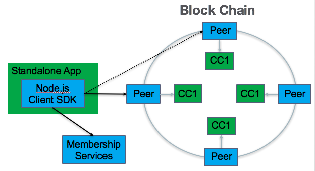

Application Overview
Hyperledger fabric supports two types of applications:
-
A standalone application that interacts directly with a blockchain. See the Standalone Application section.
-
A web application that interacts with a blockchain on behalf of its web application users. See the Web Application section.
Standalone Application
The following diagram provides an overview of the major components of Hyperledger fabric for the standalone application developer.

In the diagram above, the blue boxes are Hyperledger fabric components and the green boxes are application developer components. Each outer box represents a separate process.
The Standalone Application may be developed in Node.js by using the Hyperledger fabric Client (HFC) SDK for Node.js. This SDK handles all interactions with other Hyperledger fabric components.
SDK interactions
The SDK interacts with a Peer process. If the Peer process fails, the Node.js Client SDK can fail-over to another Peer as shown by the dotted line from the Node.js Client SDK to another Peer.
This interaction with the Peer consists of submitting transactions to the blockchain. There are three types of transactions:
- deploy - to deploy developer’s chaincode as depicted by the green CC1 boxes in the diagram;
- invoke - to execute a chaincode function which changes the state of the blockchain database;
- query - to execute a chaincode function which may return state information related to the blockchain database.
The SDK also interacts with a Membership Services process. In fact, if security is enabled in the Peer (strongly recommended), the Node.js client SDK must interact with Membership Services first in order to retrieve credential certificates which are then used to interact with the Peer.
The interaction with the Membership Services consists of:
- register - to invite a new user to the blockchain
- enroll - to get access to the blockchain
Web Application
The following diagram provides an overview of the major components of Hyperledger fabric for the web application developer.
At a high-level, you can think of the blockchain as a database with which the web application interacts; therefore, it is similar to the following topology.
browser --> web tier --> database tier

In the diagram above, the blue boxes are Hyperledger fabric components and the green boxes are application developer components. Each outer box represents a separate process.
The browser interacts with the developer’s Node.js web application using the Hyperledger fabric’s Node.js client SDK. The SDK handles all interactions with other Hyperledger fabric components as described in the SDK interactions section of Standalone Application.